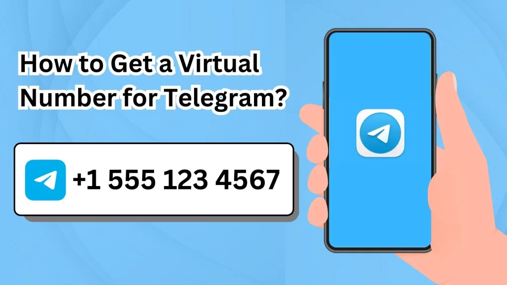

要用虚拟手机号注册电报，首先通过虚拟号码服务（如TextNow、Google Voice）获取一个号码。然后在电报注册页面输入该虚拟号码，接收验证码并输入完成验证。确保所选虚拟号码支持接收短信验证码。

Telegram不支持直接使用Google账号登录。要登录Telegram，你需要使用手机号码注册或登录。首次 […]
在Telegram群组中下载文件，首先进入群组对话，找到你想下载的文件。点击文件缩略图或文件名，Telegra […]
在电报群中搜索聊天记录，可以通过以下步骤：打开群聊，点击上方群名进入群设置页面，点击“搜索”栏，输入关键词进行 […]
在电报群中搜索关键词，打开群聊后，点击右上角的群信息图标。然后点击“搜索”功能，输入你想查找的关键词，Tele […]